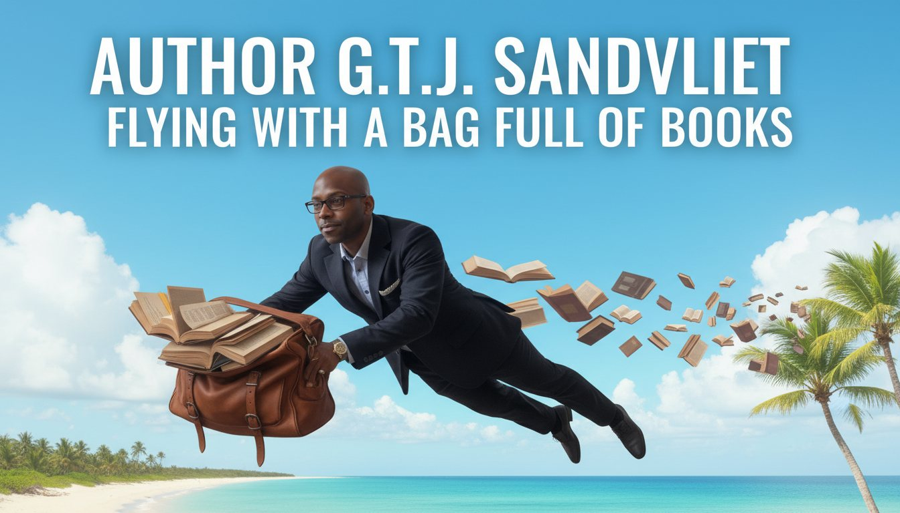
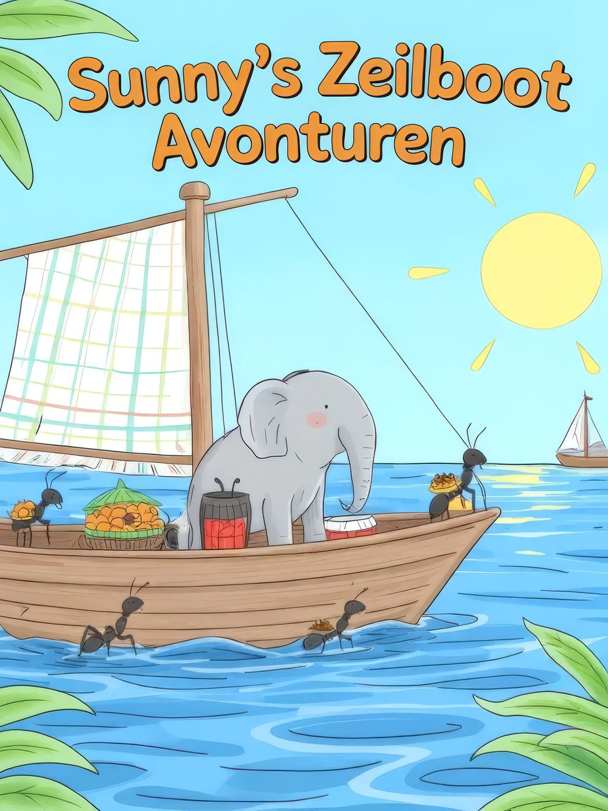
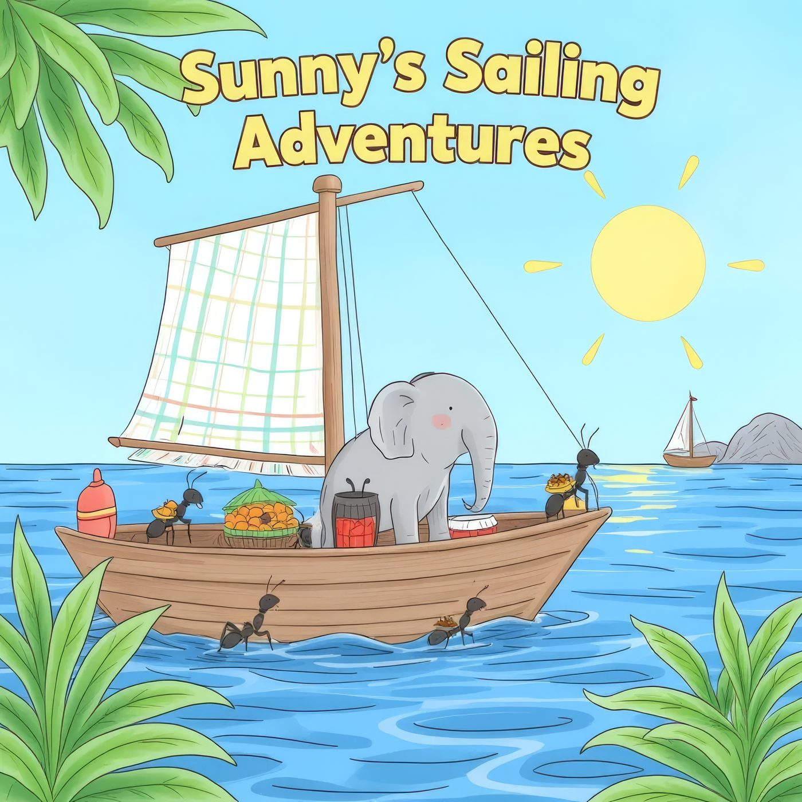
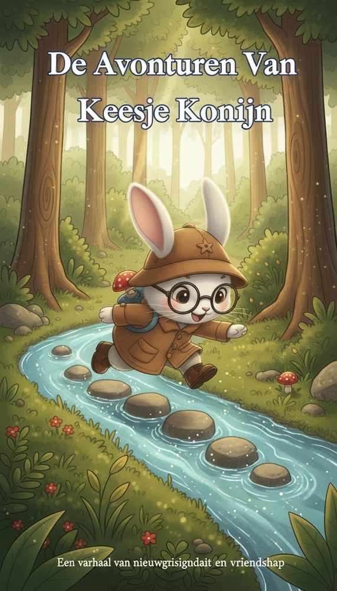
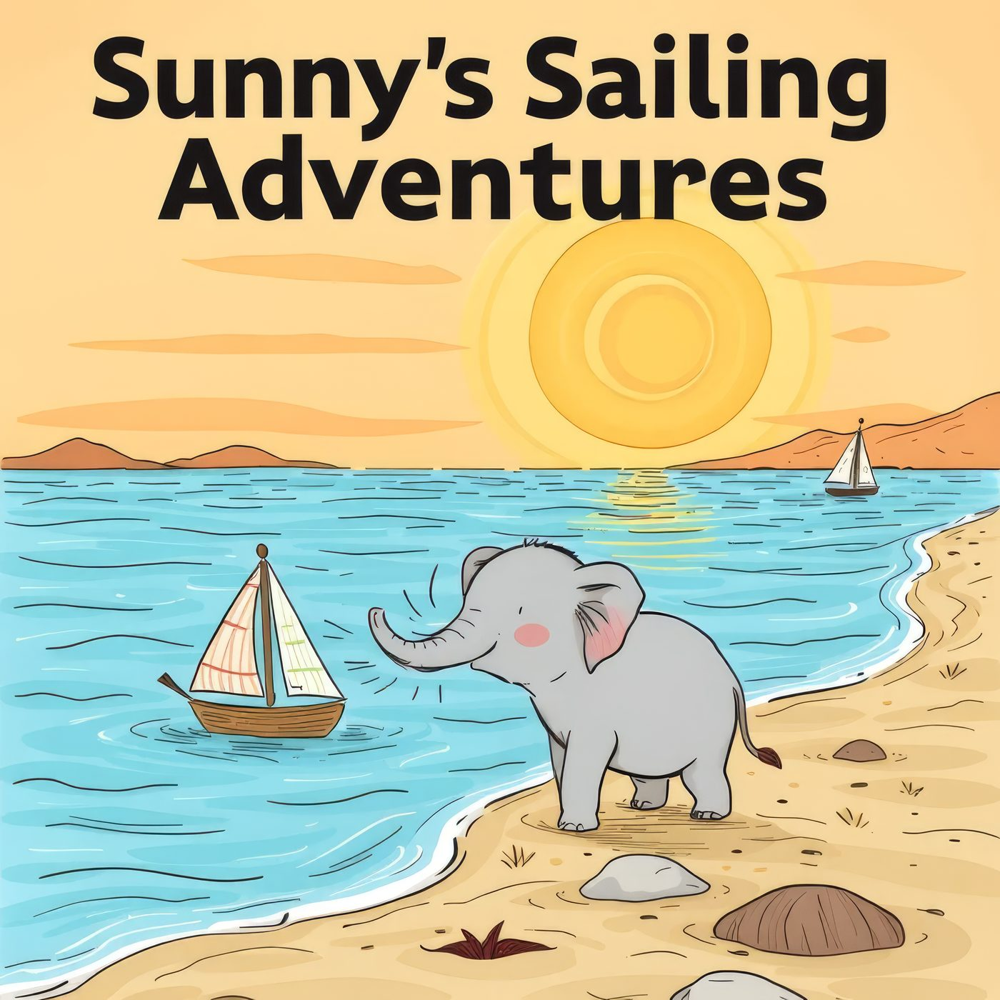
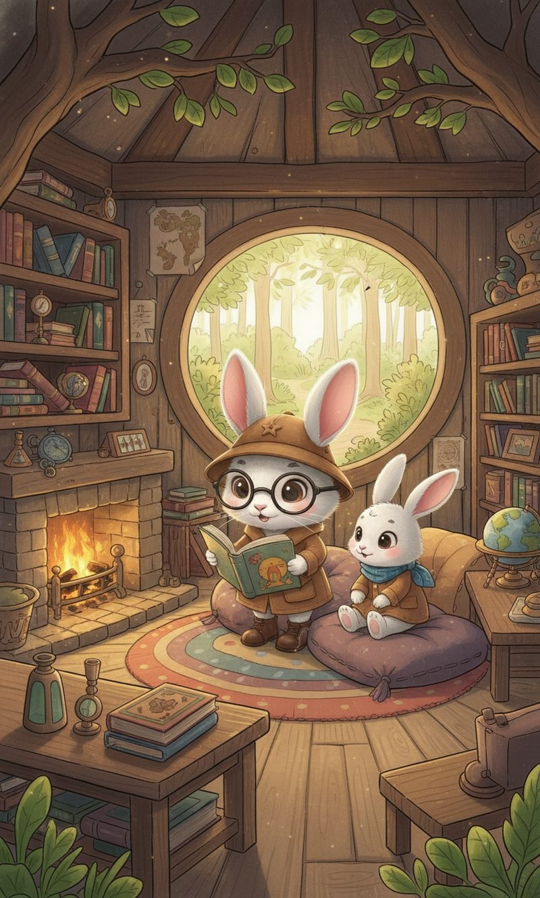
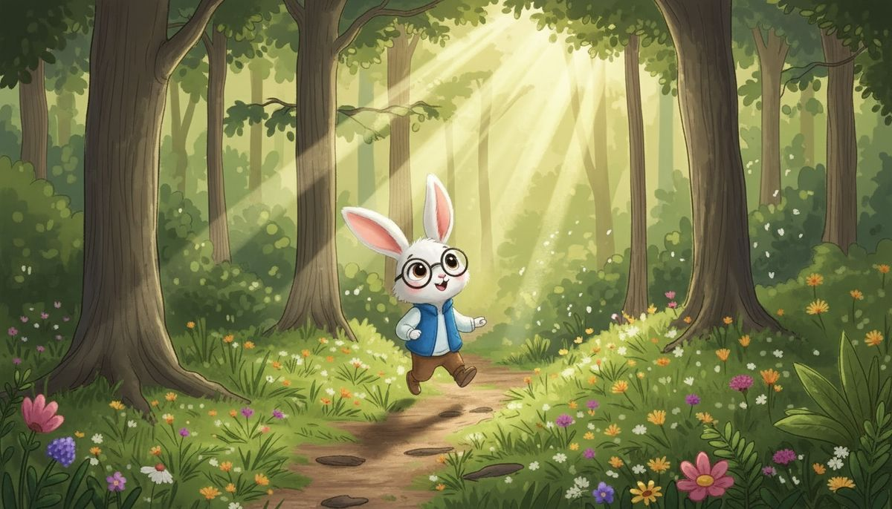
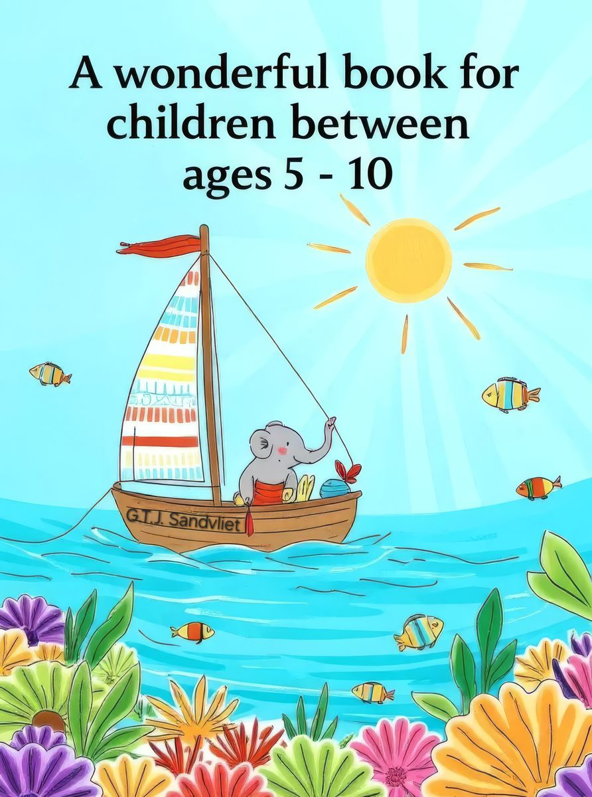
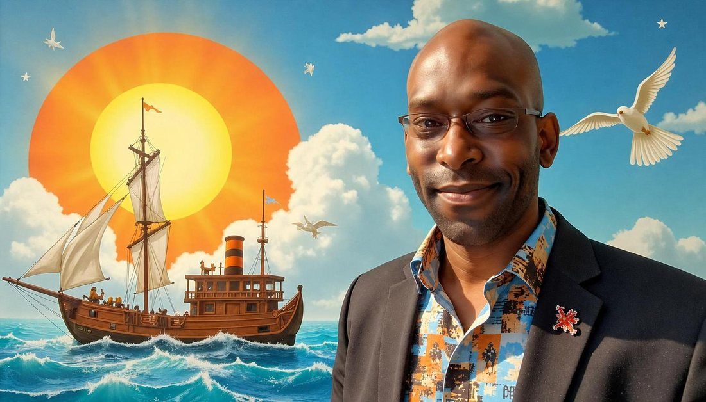
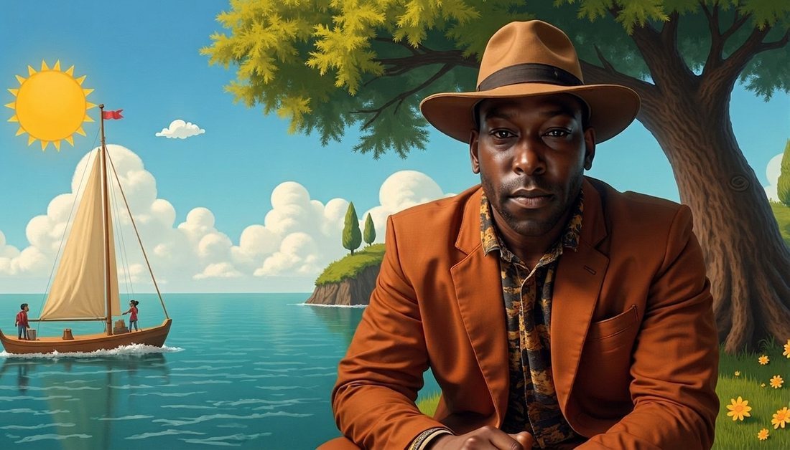

Vrolijke verhalen voor kinderen van 5 tot 10 jaar — geschreven en geïllustreerd door G.T.J. Sandvliet.


The English edition — a wonderful book for children between ages 5–10.

Keesje de detective-konijn losse mysteries op in het bos — met luister- en videoboek-versie.

Het eerste audioboek-hoofdstuk in het Engels: Chapter 1, The Magical Sailboat.

Alle G2B-figuren bij elkaar: merchandise, kaartspellen en meer op de Animal Heroes-site.
Het boek als filmpje: de pagina's verschijnen terwijl het verhaal wordt voorgelezen. Druk op play en blader mee — of kijk gewoon mee.

🐰 De Avonturen van Keesje Konijn — hoofdstuk 1, voorgelezen. De pagina's draaien mee met het verhaal.

⛵ Sunny — Chapter 1: The Magical Sailboat (English audio edition, deel a). Wil je deel b horen? Zie Luister hieronder.
Audioboeken en verhaal-audio om direct te beluisteren — klik op play.
Korte clips bij de verhalen en de wereld eromheen.
Sunny's avontuur begint — intro
Sunny ontmoet de dolfijn
Keesje Konijn in het bos
De magische zeilboot vaart uit


G.T.J. Sandvliet schrijft en illustreert kinderboeken onder de naam GS Books, als onderdeel van het Good2Better-universum. Zijn verhalen over Sunny de olifant en Keesje Konijn combineren vrolijke avonturen met warme vriendschappen.
Wat deze boeken bijzonder maakt: alles is eigen gemaakt — de verhalen, de illustraties, de audioboeken, de muziek en zelfs de tools waarmee ze gemaakt zijn (zie hieronder).
— G.T.J. Sandvliet
Vind dezelfde plaatjes uit het Keesje Konijn-boek. Hoe minder beurten, hoe beter!
Klik op twee kaartjes…
Deze boeken zijn gemaakt met de eigen G2B-programma's van Good2Better — volledig onafhankelijk.
Beeldbewerking en illustraties voor de boeken en merchandise.
Van boek naar spel, activiteitenboek en drukklare PDF.
Muziek en audio voor de audioboeken en videoboeken.
De eigen verkoopwinkel van Good2Better — 100% onafhankelijk.